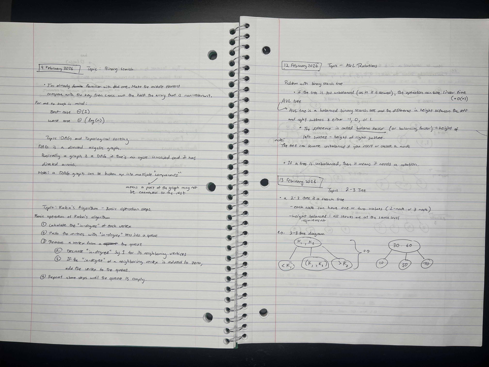
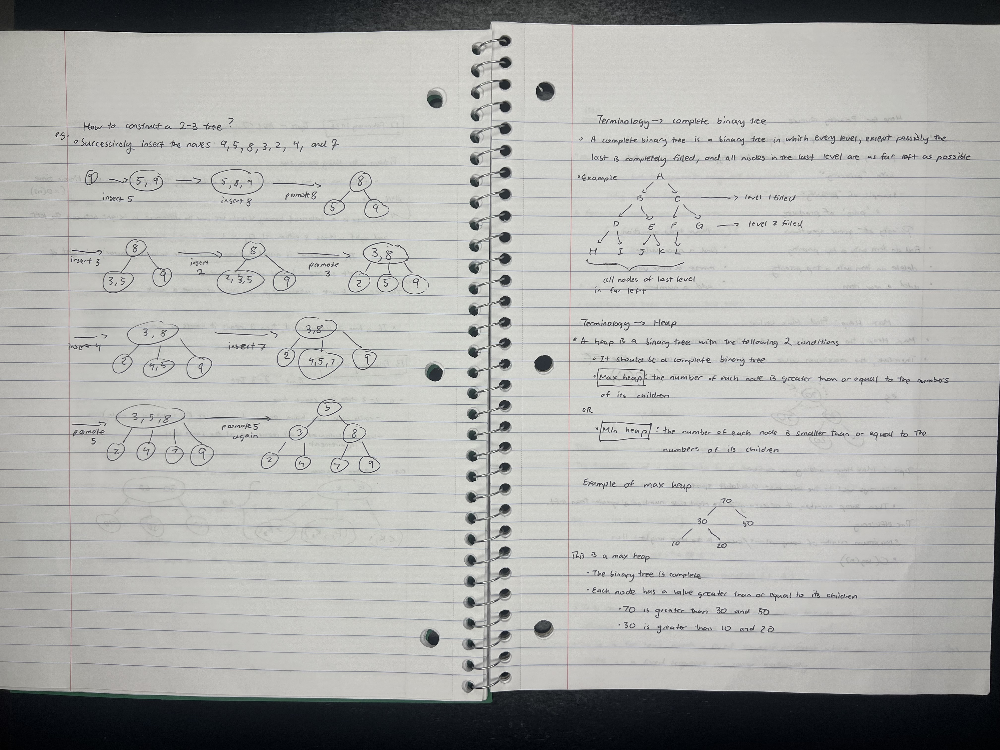
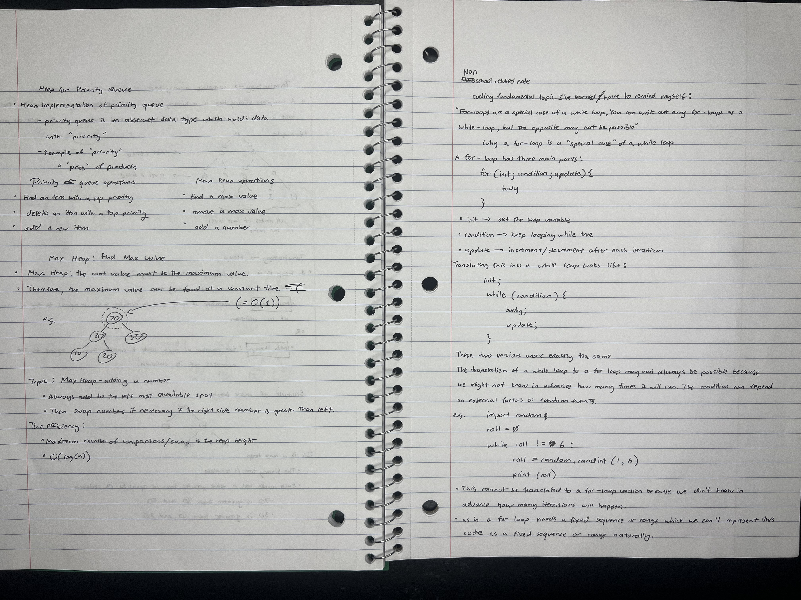

Week 6
( 11 February 2026 ) to ( 17 February 2026 )
Analysis of my learning for the week:
I am going through a simultaneous feeling of both imposter syndrome and strength in my capacity. It feels like everyday I have to constantly remind myself of the most basic fundamentals that I thought I learned but forgotten several times in a row. Yet at the same time, I am becoming faster in reading code as I am getting more familiar in recognizing certain patterns and statements.
For this week, I was more focused on finishing some of my micro internship requirement priorities. This means although I viewed all the lecture videos, I did not perform adequate practice on the concepts. This resulted in a long drawn out 11 hour marathon or so this Tuesday trying to get the homework done and understand the concepts attached to it. On the bright side, I went to Khanh's office hour and received some fun insight on his belief on what entails someone to be a great software developer. He shared an interesting article titled "Andrej Karpathy warns Programmers: I've never felt this much behind as a programmer" which I am looking forward to reading soon.


